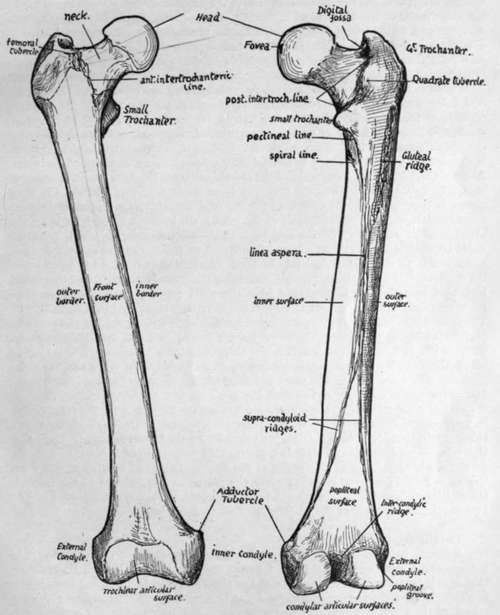

Femur
Description
This section is from the book "The Anatomy Of The Human Skeleton", by J. Ernest Frazer. Also available from Amazon: The anatomy of the human skeleton.
Femur
A long bone forming the skeleton of the thigh, articulating with the innominate bone above and with the tibia below, and carrying the patella in front of its lower end : consisting of a shaft, which is directed downwards, inwards and slightly forwards, and an upper and lower end (Fig. 114). cover of the back part of this, for the insertion of Obturator externus. The great trochanter is for the attachment of muscles of the gluteal group. At the back the great trochanter is connected by the posterior intertrochanteric line with the small trochanter, which is a rounded process projecting inwards from the back aspect of the bone, for the attachment of the Ilio-Psoas : the quadrate tubercle is a rounded mass in the intertrochanteric line to which the Quadratus femoris is attached. In front a rough line, anterior intertrochanteric, at the junction of the neck and shaft, marks the attachment of the ilio-femoral ligament : it does not ieach the trochanter minor : its upper end, on the front of the great trochanter, presents a prominent femoral tubercle. The shaft is triangular on section in its centre, presenting inner, outer, and front surfaces, separated by inner, outer, and posterior borders : the first two of these borders are rounded primary edges, but the last is crowned by a longitudinally-running linea aspera, a rough compound secondary crest marking the attachment of adductor and other muscles. The three surfaces of the shaft are covered by the extensor muscles of the knee. The linea aspera can be traced up to the level of the small trochanter : outside its upper part is a rough broad ridge-sometimes a depression- the gluteal ridge, for the Gluteus maximus : leading to the small trochanter from the hnea aspera is a line which may be termed the pectineal line, for insertion of Pectineus. About an inch below the pectineal hne the spiral line leaves the linea aspera and crosses obliquely upwards and forwards over the inner surface. Traced down, the linea aspera is seen to divide into inner and outer supracondylar lines, enclosing between them the triangular popliteal surface of the bone : the inner supracondylar is for the attachment of Adductor magnus, and leads to the adductor tubercle, which is for the ischio-condylar part of the muscle and is situated on the top of the internal condyle, a mass of bone that is matched on the outer side by the external condyle. Between the condyles is the intercondylic notch, containing the crucial ligaments, and this notch, seen best from behind, is separated from the shaft here by the intercondylic ridge for the attachment of the posterior ligament covering the crucial ligaments behind. The condyles have curved articular surfaces which are carried back on the posterior projections of the condyles. The condyles are united in front, and their articular surfaces join to form a trochlear surface for the patella : the patellar surface is marked off by a more or less distinct transverse groove on each condyle from the lower or tibial surface. The lower part of the shaft widens gradually to carry the condylar masses, and owing to the obliquity of the shaft the inner condyle is more prominent, though it does not come lower than the outer one ; but the outer condyle for the same reason is more directly concerned in weight transmission, and is therefore stronger and thicker. On the side of each condyle are tubercles for the lateral ligaments, and below this tubercle on the outer condyle is a groove that ends in front in a pit or marking for the origin of Popliteus : the tendon of the muscle is said to lie in the groove when the leg is fully flexed. The femora carry the pelvis, and the weight of the trunk is transmitted to each bone through the upper and back part of the acetabulum. The bones articulate strongly at the hip joint.
The upper end includes head, neck, and two trochanters. The head is connected with the shaft by the elongated neck, which is directed upwards and inwards and somewhat forwards,* forming an angle of about 125 degrees with the shaft. The head is about two-thirds of a sphere, and has on it a depression, the fovea femoris, for the attachment of the round ligament of the joint. The neck expands towards the shaft and is overhung externally by the great trochanter : there is a deep digital fossa under.
* Variable in amount of rotation ; may be even directed slightly backwards.
Fig. 114.-Anterior an j posterior views of right femur. Left bone is usually a few millimetres longer.
Continue to: